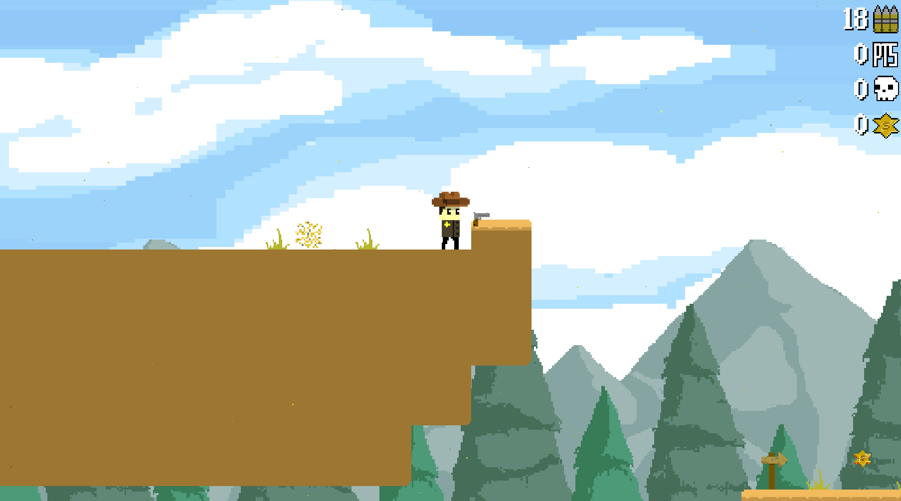

About Rootin' Tootin
Rootin' Tootin' is a 2D platformer where you play as a cowboy sheriff traveling across different time periods to capture escaped prisoners. Starting in the Wild West, the sheriff comes across a time machine that sends him into futuristic cities, WW2 battlegrounds, the moon, post-apocalyptic wastelands, and even prehistoric times. Every new time period has customized, era specific weapons that can also assist in the platforming puzzles.
Core Features:
- Custom Pixel Art, Sprites, and Animations
- Era-Specific Weapons (ex: Revolver in the Wild West, Captain America Shield in WW2)
- Unique Boss Fights and Platforming Challenges
- Collectibles and Progression Tracking
- Designed and Developed Solo using GameMaker Studio 2
Technologies Used:
- GameMaker Studio 2
- GML (GameMaker Language)
- Photoshop (Pixel Sprites)
Gameplay Screenshots:
